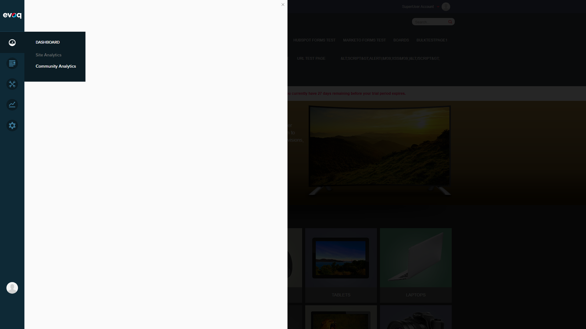

Blocking Issue Details
JavaScript Error
Error: TypeError: utility.serializeCustomDate is not a function
Location: social-dashboard-combined-instance.js:1025:39
Stack Trace:
at dashboardClass.init (http://localhost:8081/DesktopModules/admin/Dnn.PersonaBar/Modules/Evoq.CommunityAnalytics/scripts/social-dashboard-combined-instance.js?cdv=132:1025:39)
at Object.init (http://localhost:8081/DesktopModules/admin/Dnn.PersonaBar/Modules/Evoq.CommunityAnalytics/scripts/social-dashboard-combined.js?cdv=132:16:23)
at http://localhost:8081/DesktopModules/admin/Dnn.PersonaBar/scripts/extension.js?cdv=132:104:32
Impact
- The Community Analytics dashboard fails to initialize
- The panel area remains blank/empty when accessing Community Analytics
- All Community Analytics features are inaccessible including Wiki, Blogs, Discussions, Ideas, Answers, and Social Events analytics
- Site Analytics (under the same Dashboard menu) works correctly, confirming this is specific to Community Analytics
Root Cause Analysis
The error occurs because the
utility.serializeCustomDate function is being called in the
dashboardClass.init method, but this function does not exist or is not properly loaded in the utility object. This suggests either:
- A missing or improperly loaded dependency script
- A version mismatch between PersonaBar components
- The utility module was updated without updating the Community Analytics scripts
Relevant Code Files
Services/CommunityAnalyticsController.cs - API endpoints (functioning correctly)Components/CommunityAnalyticsController.cs - Extension controller (functioning correctly)scripts/social-dashboard-combined-instance.js - Contains the failing codeEvoq.PersonaBar.CommunityAnalytics.dnn - Package manifest
Test Scenarios (All Blocked)
Scenario 1: View Wiki Page Statistics
BLOCKED
Description: View statistics for wiki pages including views, edits, and engagement metrics.
Status: Could not execute - Community Analytics dashboard does not load due to JavaScript error.
Scenario 2: Track Edit Frequency
BLOCKED
Description: Monitor how frequently wiki pages are edited over time.
Status: Could not execute - Community Analytics dashboard does not load due to JavaScript error.
Scenario 3: Monitor Contributor Activity
BLOCKED
Description: Track which users are contributing to wiki content and their activity levels.
Status: Could not execute - Community Analytics dashboard does not load due to JavaScript error.
Scenario 4: Test Popular Wiki Pages
BLOCKED
Description: View the most popular wiki pages based on engagement metrics.
Status: Could not execute - Community Analytics dashboard does not load due to JavaScript error.
Scenario 5: Verify Wiki-Specific Metrics
BLOCKED
Description: Verify that wiki-specific metrics (page views, revisions, unique contributors) are displayed correctly.
Status: Could not execute - Community Analytics dashboard does not load due to JavaScript error.
Scenario 6: Analyze Content Growth Over Time
BLOCKED
Description: Review content growth trends for wiki pages over different time periods.
Status: Could not execute - Community Analytics dashboard does not load due to JavaScript error.
Test Evidence (Screenshots)
Step 1: Login Page
Successfully accessed the DNN login page.

Step 2: Logged In Homepage
Successfully logged in as host (SuperUser Account). PersonaBar visible on left side.

Step 3: Dashboard Menu - Community Analytics Option
Dashboard submenu showing Site Analytics and Community Analytics options.

Step 4: Community Analytics Panel (Empty - Error State)
After clicking Community Analytics, the panel area remains empty/blank due to the JavaScript error.

Step 5: JavaScript Error Documentation
The Community Analytics panel fails to load content.

Step 6: Site Analytics Works (Comparison)
Site Analytics loads successfully, proving the issue is specific to Community Analytics. Note the Google Analytics warning is expected (not the blocking issue).

Step 7: Final State
Homepage after testing, showing the site is functional but Community Analytics remains broken.

Conclusion
The Wiki Module Analytics feature testing was blocked due to a critical JavaScript error in the Community Analytics module. The error (TypeError: utility.serializeCustomDate is not a function) prevents the dashboard from initializing, making it impossible to access any Community Analytics features including Wiki analytics.
This bug should be prioritized for fixing as it affects all Community Analytics functionality across the platform.